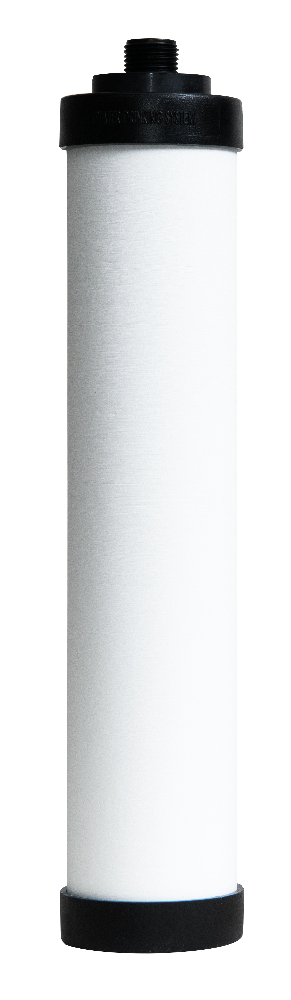
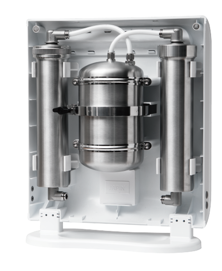

01 / 物理阻隔精密陶瓷濾心
0.2–0.4 μm由天然矽藻土／矽藻化石燒製，以細密孔隙攔截泥沙、鐵鏽及微粒。
可依使用狀況清潔表面，仍需定期更換；刷洗不能取代耗材週期。
查看更換與保養 →
實品照片供結構與外觀參考；下方顏色選擇為選購偏好。
淨化與保留在濾淨過程中一起完成，水流隨後通過磁化裝置，完成品牌所稱的「水質活化」。
形成水流通過的磁場環境。
安排水經過磁場的路徑。
水在流動中完成這道物理處理。

從進水、鋼瓶、接頭到取水端，材質與管線一同構成水路。日常濾水使用家中水壓，非 RO 系統不另排廢水。
查看目前可用水量。
記錄本次濾心使用多久。
顯示出水與異常提醒。
綠燈正常、橙燈提醒、紅燈到期。
iWater 金字塔能量活水機
以水壓推動日常濾淨。
| 品牌 | iWater |
|---|---|
| 設備名稱 | iWater 金字塔能量活水機 |
| 產出水名稱 | iWater 生物分子水 |
| 機身尺寸 | 360 × 410 × 160 mm |
| 重量 | 約 8.4 kg |
| 流速 | 約 2.34 L/min |
| 適用水壓 | 30–100 psi |
| 適用水溫 | 約 5–38°C |
| 額定過濾量 | 4,500 L |
| 精密陶瓷濾心 | 約 0.2–0.4 μm |
| 高壓縮活性碳濾心 | 約 0.5 μm |
| 主要濾心 | MWB049／MWB046 |
| 後續處理 | 金字塔水磁化 |
| 日常濾水 | 利用家中水壓，不需另接電源 |
| 排水 | 濾水時不另排廢水 |
| 顯示資訊 | 剩餘用量、使用天數、水流狀態、濾心提醒 |
| 主要水路材質 | 304 不鏽鋼鋼瓶；部分快速接頭採 316 不鏽鋼 |
| 整機保固 | 1 年 |
| 機身顏色 | 科技銀／曜石黑 |
查看剩餘水量、使用天數、出水狀態與更換提醒。綠色表示正常，橘色提示留意，紅色提示到期。
規格與顯示功能依所選機型及配置確認。
先核對水壓、龍頭接頭、安裝位置與管路空間。
地下水、山泉水等需先了解原水狀況，再確認設備適用性及前置處理。
機身 36 × 41 × 16 cm、約 8.4 kg。另留配管、接頭與維修空間；壁掛、櫥下或分接其他設備需專業評估。
先確認家裡的水源與空間，讓後續使用更從容。
依資料網站 2026/09/30 所列價格。照片為結構展示，實際款式、配件與價格依選購時確認；額外配管、移機或工程另行估價。
自來水環境建議兩道濾心及 PU 水管每年更換；地下水環境建議兩道濾心每半年更換，仍需依水質與用量調整。
磁化裝置平常不需像濾心定期拆洗，有疑問時交由服務人員檢查。
確認水壓、接頭、管路及保養空間；地下水或山泉水需先評估水質與前置處理。
依官方方式清潔陶瓷濾心，換芯後按指引沖洗。漏水、接頭或管路問題由技術人員處理。
長期未使用時，先檢查鋼瓶、管線、接頭、磁化裝置及流量計，不能只靠更換濾心判斷。
污染物減量看過濾測試；水樣差異看研究條件。
氯、氯胺與 Class I 微粒子等項目。
鉛、汞、囊胞、石綿與濁度等項目。
雙酚 A、部分藥物及其他指定物質。
上述為資料網站列示的認證與測試範圍，標準編號不是等級排序。效能對應特定整機、濾心配置及測試條件，應以所選型號的現行名錄與效能表核對。
原報告使用早期 COSMIC WATER SYSTEM 名稱，並非現行機型的直接測試。數字反映該次水樣量測，不能換算成人體吸收率或證明水分子團大小。
| 水樣狀態 | 磁化前 | 磁化後 |
|---|---|---|
| 新鮮水樣 | 8.9 | 11.3 |
| 靜置 12 天 | 7.9 | 9.4 |
數據為該次特定溫度與水樣條件下的結果，不代表每次家庭用水皆有相同數值。
資料網站收錄 2001 年特定蔬果與農藥的清洗試驗、2021 年牛肉浸泡殘留測試，以及 2025 年微生物培養、大豆粕蛋白質萃取及中草藥複方 DPPH 測定。
這些結果分別對應特定食材、培養或體外萃取條件，不能概括為所有食材的清洗效果，也不能換算成人體營養吸收或抗氧化功效。
研究資料包含 RAW264.7 巨噬細胞在 LPS 刺激下的 COX-2、IL-10 觀察，以及 2021 年 30 隻雄性小鼠、為期 12 週的高脂飲食比較。
細胞與動物模型有助於提出研究問題，不能直接視為人體飲用後的抗發炎、減重或護肝效果。
研究摘要依資料網站整理，量測方法、原始圖譜與完整報告請見 水質與生物研究 ↗。
沿革依提供的產品資料整理；專利紀錄不等同濾淨或人體功效證明。
查看原始專利證書 PDF ↗選好偏好，帶著安裝條件一起詢問。
先確認設備售價、濾心及額外施工費用。
查看設備與後續費用 →依新裝或舊換新，確認月付金額、方案期間與包含的服務。顏色與機型依實際方案確認。
查看租購方案 ↗偏好與評估保留於目前分頁，尚未送出詢問。